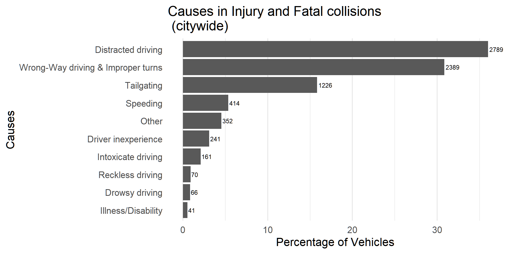
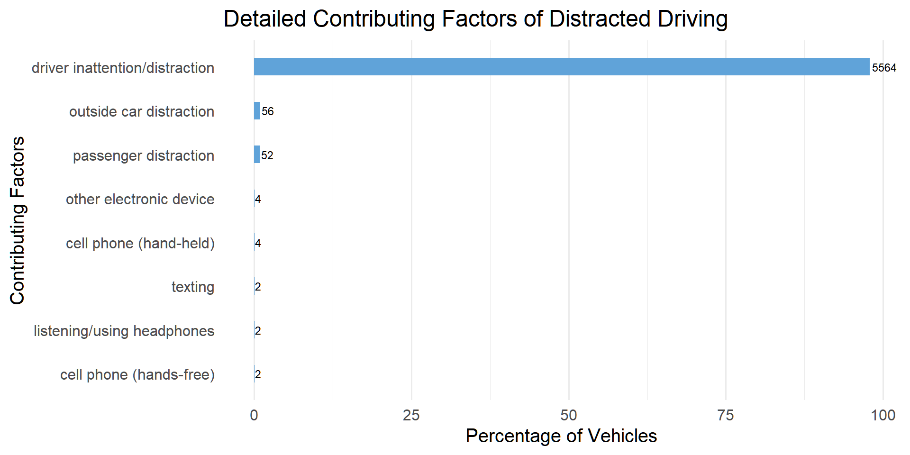
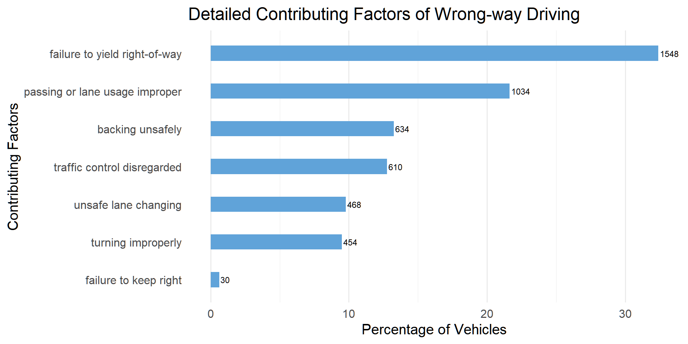

Chapter 5 Results
5.1 Where do car accidents usually occur in NYC? Where do those severe accidents occur?
New York City (NYC) is composed of five boroughs: The Bronx, Brooklyn, Manhattan, Queens, and Staten Island. Every borough is different in terms of its traffic and the number of passengers or vehicles on the street. In order to take a deep dive to investigate which areas have more car accidents and more severe accidents, we first break down NYC into 5 boroughs to analyze, aiming to have a big picture of how these 5 boroughs perform. Then, we drill down to analyze the performance of the precinct with respect to 5 boroughs and find the precincts with the highest severe accidents rate.
5.1.1 2021 NYC Car Collisions by Borough
From the datasets, we define severe accidents as: injured or fatal accidents; not severe accidents as the rest of total collisions. The first graph shows an overall number of collisions in NYC separated by two categories: severe, not severe. Apparently, most collisions are not severe accidents. The number of severe collisions is roughly half of not severe collisions: not severe accidents (6236) v.s. severe accidents (3750). By clicking the legend on the right side of the graph, we can select which boroughs we want to investigate further.
Then, we separate collisions by borough in order to compare the difference of total number of collisions among boroughs.
From the above graph, Brooklyn and Queens are the areas that have the highest number of collisions, for both severe and not severe collisions. The following two boroughs are Bronx and Manhattan, whose number of collisions is roughly half of the top 2. Staten Island is the borough that has the least number of collisions. By clicking the legend on the right, we can also compare the number of severe accidents and not severe accidents. We can find the pattern is similar to the total number of all collisions. This phenomenon presumes that the collision type (severe and not severe) does not have a strong relationship with the geological difference.
To further justify the assumption, we plot the stacked percentage bar chart to compare the distribution of severe and not severe accidents among 5 boroughs.
The stacked bar chart above shows the proportion of total collisions in each borough for severe and non-severe collisions. Indeed, the distribution of each borough is very similar for two collision types. Those boroughs with a high number of collisions in severe accidents are also high in not-severe accidents. Being aware of this information will help us determine which area needs more attention. If the proportion of severe accidents is high in an area, drivers need to be extra cautious while driving this area since the cost of severe accidents is expensive.
However, in our data, every borough has around 10-20 precincts. Thus, we further investigate the severe accidents rate by precinct in order to avoid the dilution of analysis.
5.1.2 2021 NYC Car Collisions by Precinct
The above graph presents the top 20 precincts with the highest severe accidents rate, and we found:
- The proportions of severe collisions range from 40% to 55%. In a real-world scenario, this figure is concerning. It means that if a car accident occurs in those precincts, there is a nearly 50% chance of either injury or fatality.
- None of the precincts come from Staten Island, meaning that Staten Island is a relatively safe area to drive or walk.
- Precincts with higher rankings come from Brooklyn and Manhattan among the top 20 precincts with the highest severe collision rate.
- In terms of total collisions, Manhattan ranks fourth out of five boroughs. However, several precincts in Manhattan rank high in terms of the severe rate. Especially, the 9th Precinct in Manhattan has the highest severe rate (54.55 percent) of collisions. Two potential reasons may be: the relatively young drivers’ age in the East Village and massive traffic during peak hours.
At this point, we can answer our first question:
- Brooklyn and Queens involved with more car accidents.
- Among those car accidents, precincts in Brooklyn and Manhattan have more severe collisions.
5.2 What causes severe vehicle crashes?
5.2.1 Overview
Car collisions are often stressful, unpleasant, and traumatic events. They occur due to a variety of factors. Certain elements, however, appear to have a greater impact on the equation than others. If we understand what causes car accidents, we may be able to help lower the chances of being involved in one.
We are going to identify the primary causes of serious car accidents in New York City. The graph below displays the most common causes of serious accidents. The label on the right side of the bar indicates the actual number of vehicles involved in these serious incidents.

As shown in the graph above, distracted driving and wrong-way driving & improper turns are the two leading causes of severe road accidents in New York City, accounting for over 4000 vehicles (>65%) involved in serious accidents. Distractions behind the wheel can occur for a variety of reasons. Using a cellphone while driving, as well as eating food or drinking while driving, are some of the major causes of distracted driving accidents. Accidents also occur when people fail to yield right-of-way, turn signals correctly, or follow traffic signals.
Tailgating is the next big cause, accounting for over 1000 vehicles (>15%) involved in severe crashes. Driving too close to the leading vehicle or failing to keep a safe space from other cars makes one difficult to react to sudden changes.
Illness/disability, drowsy driving, and reckless driving cause a relatively small number of crashes.
5.2.2 Is there any geographical variation in the contributing factors?
Previous research has revealed that NYC is not equally safe in all areas, and the proportion of serious car accidents is close to 40%. This raises the question of whether the causes are distributed differently, i.e., is there a link between contributing factors and boroughs? A mosaic plot is ideal for investigating this question. It is worth noting that the width of the columns is proportional to the number of observations in each borough, and the vertical length of the bars (height of each box) is proportional to the number of observations in causes within each borough.
The mosaic plot above displays boxes of each cause at varying heights distributed across five boroughs. More specifically, the proportion of distracted driving incidents in Brooklyn, Manhattan, and Staten Island is significantly higher than in Queens and the Bronx. The Bronx has the highest percentage of Speeding cases. Furthermore, by hovering above the graph, we surprisingly found that wrong-way driving is the leading cause in Queens, while distracted driving is the leading cause in the other four.
Therefore, we conclude from these findings that the distribution of causes varies by location.
5.2.3 Main factor in leading causes
As we discovered distracted driving and wrong-way driving & Improper turns are the two major causes of accidents, we want to go at the specifics of these two factors. The graph below depicts the elements that contribute to the two primary causes. The label on the right side of the bar indicates the actual number of vehicles involved in these serious incidents.

Over 95% of distracted driving is caused by the driver’s inattention. Besides, external distractions such as billboards and advertising may cause certain motorists to become distracted. Furthermore, passengers’ distractions could occur on ride-sharing services such as Uber and Lyft.
Regarding wrong-way driving, failure to yield the right-of-way accounts for almost one-third of all incidents. Yielding the right of way refers to allowing another vehicle to enter an intersection first. The goal is to reduce the possibility of accidents in less controlled areas or areas with no traffic lights. Failure to do so may result in serious accidents. In addition, more than 20% of wrong-way driving is caused by improper passing or lane usage, which occurs when a passing driver forces another driver off the road or when a driver changes lanes but forces the driver currently in that lane to brake. Improper passing or changing lanes can result in serious injury or fatal collisions.
At this point, we can answer our second question:
- Distracted driving and wrong-way driving & Improper turns are the two leading causes of accidents in NYC.
- The distribution of causes varies by location. In particular, wrong-way driving is the leading cause in Queens, while distracted driving is the leading cause in the other four.
5.3 Are people at different positions during vehicle collisions equally injured?
5.3.1 Overall Patterns
Another motivating concern of this project is that: Does certain category of individual have a higher death rate during collisions?
First we want to take a look at the patterns of number of individuals involved in motor vehicle accidents in our dataset. As mentioned in earlier sections, our data spreads across 5 boroughs in New York: Bronx, Brooklyn, Manhattan, Queens, and Staten Island.
We can see from the graph that Brooklyn and Queens has the top 2 total counts of individuals involved in collisions, which matches our discovery in previous sections that Brooklyn and Queens are the areas that have the highest number of collisions
A general pattern across the boroughs is that Drivers seem to have a highest proportion of presence in collisions,followed by passengers, which is quite self-explanatory, as car collisions should always involve drivers and sometimes there are passengers in cars. We can see that the boroughs could be split into 3 sets based on total counts of individuals involved in collisions: Brooklyn and queens, Bronx and Manhattan, and Staten Island by itself. There exist gaps of counts between the groups, we believe this is due to the total amount of traffic, population, and other factors.
Now we notice that there seems to be a general pattern across boroughs. To better visualize the pattern, we decided to plot them in proportions.
From this stacked bar chart of proportions, we find that the distribution of different types of transportation almost remains the same across different boroughs at New York, that driver takes about 40% of individual counts, passenger takes about 30%, Pedestrians take about 20%, and Cyclist would take the rest 10%. However, there are some abnormal cases which we would neglect in this section and talk more about in the Conclusion.
5.3.2 Survive rate Analysis
As discovered above that a general pattern is followed across different boroughs in New York, we would reluctantly merge the injured/killed counts and look deeply into the injuries and kills of different types of individuals. Which type will most likely get killed?
In this plot we showed the counts of injured individuals and killed individuals in different categories during car collision. Due to the small number of counts of killed individuals, we plot the y-axis on a log scale to better visualize the pattern. However, the patterns are still not clear enough to provide any useful information. We decide to come up with a new term: survive rate = Injured / (Injured + killed), representing the proportion of people survived when they get injured/killed in a car accident.
## Driver Passenger Cyclist Pedestrian
## 1 0.9962103 0.9967213 0.9942197 0.9846939We can see that pedestrians have the lowest survive rate while injured in a motor vehicle accident: 0.9847, while the other 3 types all have a survive rate of larger than 0.99. There are various reasoning:
This is due to the large population of pedestrians on the road of New York, which increased the expected number of individuals involved in car collisions, while the probability might not be that high.
Another explanation could be that pedestrians have the least protection and dodge ability during car collisions, as they are on foot only, which makes it hard to escape from potential car collisions. The second lowest survive rate goes to Cyclist, which also has few protection, as their body is exposed to collisions. Compared to the other 2 types, drivers and passengers share more advantage, as they’re protected by the car trunk. Drivers tend to have a lower survive rate because some death cases might only involve driver in the car, with no passengers.
We could conclude that Pedestrians might have a higher fertility rate while injured in a car collisions, not matter where they are at in New York.